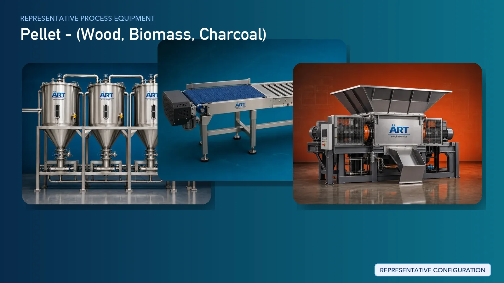

Biomass & Wood Pellet Manufacturing Plant & Machinery Solutions (Biofuel Pellet Production Systems)
Pellet manufacturing is a rapidly growing sector in the renewable energy and industrial fuel industry, producing biomass pellets, wood pellets, charcoal pellets, and agro-waste pellets used as eco-friendly fuel alternatives for boilers, furnaces, power plants, and heating systems.

About Pellet - processing
These pellets are made from materials such as wood chips, sawdust, agricultural waste (rice husk, bagasse), charcoal dust, and other biomass residues, converting low-density waste into high-density, energy-efficient fuel.
ART Mechatronics provides complete turnkey solutions for pellet manufacturing plants, offering advanced systems for drying, grinding, pelletizing, cooling, and packaging. Our solutions are designed for high-efficiency production, uniform pellet quality, and scalable operations for domestic and export markets.
Complete Pellet Manufacturing Process Flow
Biomass materials such as wood, sawdust, agro waste, or charcoal are collected and fed into the system.
Ensures smooth material flow.
Large raw materials are reduced into smaller particles.
Ensures uniform particle size.
Moisture content is reduced to optimal level (typically 8–12%).
Ensures:
- Proper pellet formation
- Higher calorific value
Material is compressed into cylindrical pellets under high pressure.
Produces:
- Uniform pellets
- High-density fuel
Hot pellets are cooled to stabilize structure.
Ensures:
- Hardness
- Durability
Dust generated during grinding and pelletizing is controlled. Systems Used:
Ensures clean working environment.
Finished pellets are stored and packed.
Suitable for:
- Bulk supply
- Export packaging
Types of Pellets Produced
- Biomass Pellets
- Wood Pellets
- Charcoal Pellets
- Agro Waste Pellets (Rice Husk, Bagasse)
- Industrial Fuel Pellets
Machinery Required for Pellet Plant
- Hopper & Feeding System
- Conveyors / Screw Feeders
- Crusher / Hammer Mill
- Rotary Dryer / Flash Dryer
- Pulverizer
- Pellet Mill (Ring Die / Flat Die)
- Pellet Cooler
- Vibro Sifter
- Dust Collection System
- Storage Silo
- Bag Filling Machine
Turnkey Pellet Plant Solutions
ART Mechatronics offers complete turnkey solutions for pellet manufacturing plants, including:
- Process design & plant layout
- Drying and grinding systems
- Pelletizing and cooling systems
- Dust control and air handling systems
- Automation & control panels
- Installation & commissioning
- After-sales support
We customize solutions based on:
- Raw material type
- Production capacity
- Pellet size requirements
- Automation level
Why Choose Art Mechatronics
- Expertise in biomass and thermal processing systems
- High-efficiency pelletizing technology
- Energy-efficient drying systems
- Consistent pellet quality and density
- Robust industrial design
- Global export capability
Machinery in a Pellet - plant
Where it's used
Get pricing & specs for the Pellet - plant
Share the product, target capacity, current process and plant location. These details help our engineers discuss the right machine or line configuration.
One partner, from design to start-up
ART Mechatronics designs, manufactures, installs and commissions your Pellet - solution with regional presence in India, UAE and Thailand.